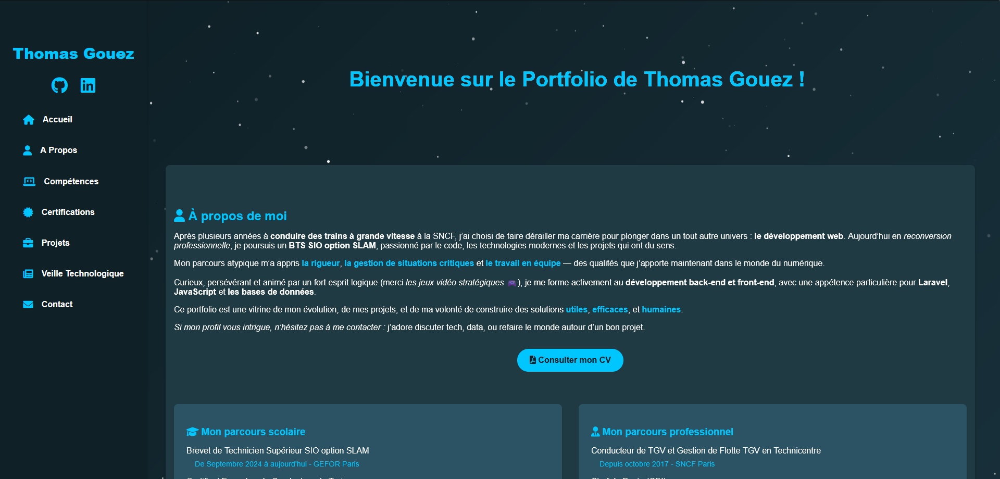
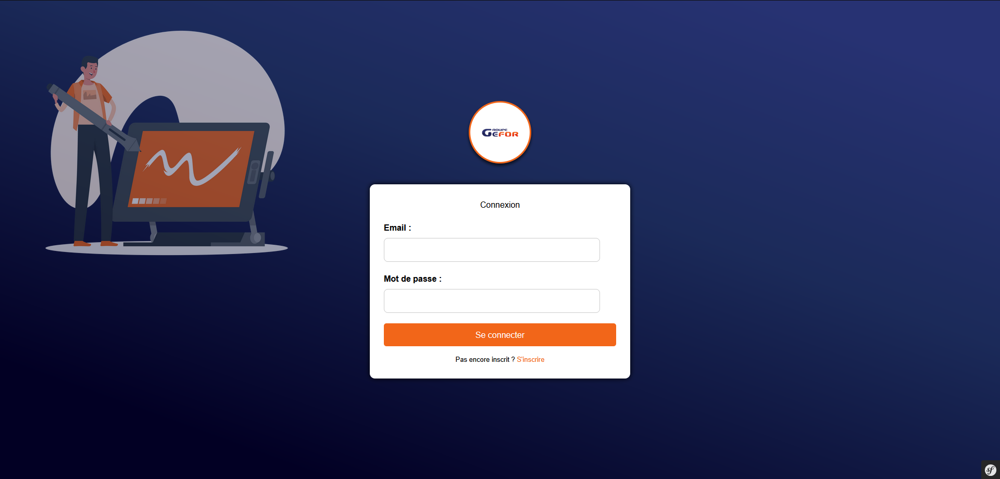
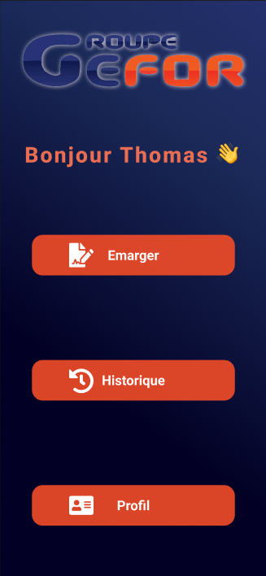

À propos de moi
Après plusieurs années à conduire des trains à grande vitesse à la SNCF, j’ai choisi de faire dérailler ma carrière pour plonger dans un tout autre univers : le développement web. Aujourd’hui en reconversion professionnelle, je poursuis un BTS SIO option SLAM, passionné par le code, les technologies modernes et les projets qui ont du sens.
Mon parcours atypique m’a appris la rigueur, la gestion de situations critiques et le travail en équipe — des qualités que j’apporte maintenant dans le monde du numérique.
Curieux, persévérant et animé par un fort esprit logique (merci les jeux vidéo stratégiques 🎮), je me forme activement au développement back-end et front-end, avec une appétence particulière pour Laravel, JavaScript et les bases de données.
Ce portfolio est une vitrine de mon évolution, de mes projets, et de ma volonté de construire des solutions utiles, efficaces, et humaines.
Si mon profil vous intrigue, n’hésitez pas à me contacter : j’adore discuter tech, data, ou refaire le monde autour d’un bon projet.
Mon parcours scolaire
- Brevet de Technicien Supérieur SIO option SLAM De Septembre 2024 à aujourd'hui - GEFOR Paris
- Certificat Européen de Conducteur de Train 2018 - CPFT Toulouse
- Baccalauréat Professionnel Sécurité Prévention SSIAP1 De 2014 à 2016 - Camas Paris Orly
- Formation d'Agent de Prévention Et de Sécurité (CQP APS & SST) 2014 - Camas Paris Orly
Mon parcours professionnel
- Conducteur de TGV et Gestion de Flotte TGV en Technicentre Depuis octobre 2017 - SNCF Paris
- Chef de Poste (CDI) De Juillet 2016 à Septembre 2017 - SGC France
- Agent de sécurité (Alternance) De Décembre 2015 à Juillet 2016 - SGC France
- Secouriste Bénévole De Mai 2013 à Juillet 2014 - Croix Rouge Française Paris
Stage pendant le BTS
- • Manipulation de base de données SQL
• Création de routes, modèles et contrôleurs sur un projet Laraval
• Création de Graphiques pour suivi administratif interne
5 semaines de Février à Mars 2025 Motion4ever Agence digitale - • Customisation template wordpress
• Ajout de fonctionnalités (page de dons / planning) 5 semaines de Novembre à Décembre 2024 Association Ara39
Qu'est-ce que le BTS SIO ?
Je vous propose de présenter en premier lieu ma filière dont je suis affecté. Le Brevet de Technicien Supérieur aux Services Informatiques aux Organisations (BTS SIO) s'adresse à ceux qui souhaitent se former en deux ans aux métiers d'administrateur réseau ou de développeur. Pour la suite, l'intégration directe dans le marché du travail ou la poursuite d'études dans le domaine de l'informatique est possible.
Le BTS SIO propose deux spécialités :
Compétences

HTML
Maîtrise de la création de structures de pages web claires, sémantiques et optimisées pour le référencement.

CSS
Compétence en design web moderne, avec des interfaces adaptatives et visuellement attrayantes.

JavaScript
Interactivité et animations dynamiques pour une expérience utilisateur améliorée.

Python
Expertise en développement d'applications et en automatisation.
SQL
Capacité à concevoir et interroger des bases de données robustes pour des applications performantes.

Laravel
Développement d'applications web sécurisées et performantes avec le framework PHP.

Symfony
Création d'applications web robustes et évolutives avec le framework PHP.
React Native
Développement d'applications mobiles performantes et réactives.

Visual Studio Code
Environnement de développement intégré pour un codage efficace et productif.

Git
Gestion de versions et collaboration efficace sur des projets de développement.
Anglais
Capacité à lire et comprendre la documentation technique en anglais.

Logique & Jeux Vidéo
Excellent raisonnement logique, aiguisé par des années d'expérience dans le gaming stratégique.
Certifications
Voici quelques-unes de mes certifications qui valident mes compétences et mon expertise dans le domaine de la technologie et du développement.
Certification PHP & MySQL
Certification en développement web dynamique avec PHP et gestion de bases de données relationnelles MySQL, incluant la sécurisation et l’optimisation des requêtes.
OpenClassrooms - 2025Certification Python
Approfondissement des bases du langage Python, orienté développement d'applications, automatisation de tâches et manipulation de données.
Codecademy - 2024Certification HTML & CSS
Maîtrise de la structuration de contenu web avec HTML5 et de la mise en forme responsive avec CSS3, en respectant les standards d’accessibilité et de performance.
OpenClassrooms - 2024RGPD
Certification sur les principes clés du Règlement Général sur la Protection des Données, sa mise en application et les bonnes pratiques de conformité numérique.
CNIL - Septembre 2024
Certification ANSSI
Initiation aux fondamentaux de la cybersécurité selon les recommandations de l’ANSSI : gestion des risques, sécurité des systèmes d'information et bonnes pratiques numériques.
ANSSI - Septembre 2024Mes Projets
Portfolio
Développement d’un site web personnel pour présenter mon parcours, mes compétences et mes projets. Ce site a été codé manuellement en HTML, CSS, JavaScript et PHP, sans CMS, afin de mettre en avant mes compétences en développement front-end. Le site est entièrement responsive et conçu pour offrir une expérience fluide sur tous les appareils.
Application d'Émargement Web
Création d’une application web d’émargement destinée à un usage en milieu scolaire. Réalisée en équipe de 3 personnes avec le framework Symfony, elle permet aux enseignants de gérer les présences en toute sécurité. Le projet comprend la conception de base de données, la gestion des utilisateurs, ainsi qu’une interface intuitive et sécurisée.
Application Mobile d'Émargement
Développement de la version mobile de notre application d’émargement à l’aide de React Native. L’objectif est de permettre aux étudiants de signer leur présence depuis leur smartphone. La capture de signature est gérée via la bibliothèque react-native-signature-canvas. Ce projet complète la version web dans une approche multiplateforme.
Veille Technologique
Dans le cadre de ma formation en BTS SIO SLAM, je réalise une veille technologique régulière afin de rester informé des dernières innovations dans les domaines du développement web, de l’intelligence artificielle et de la cybersécurité.
J’utilise notamment l’agrégateur Feedly, qui me permet de centraliser les articles, actualités et publications techniques issus de sources fiables comme OpenAI Blog, Laravel News, ou encore le CERT-FR pour la veille en cybersécurité.
🧠 Intelligence Artificielle & LLM
Je suis l’évolution des modèles de langage (LLM) tels que GPT, LLaMA ou Gemini, et leur impact sur le développement web, la gestion des données et l'automatisation.
🛠️ Frameworks & Outils Web
Je surveille activement les nouveautés sur Laravel, Symfony, React, ainsi que des outils modernes comme Vite ou Tailwind CSS pour améliorer mes pratiques de développement.
🔐 Cybersécurité & Vulnérabilités
Je suis régulièrement les alertes et bulletins du CERT-FR pour rester informé des dernières failles de sécurité critiques (Fortinet, Apache, Microsoft...) ainsi que des tendances en cybersécurité.
- 📅 05 mai 2025 — Bulletin CERTFR-2025-ACT-019
- 📅 14 janv. 2025 — Faille critique Fortinet (CVE-2024-55591)
- 📄 Rapport annuel — Panorama ANSSI 2024
Ces informations me parviennent via Feedly, que j’utilise pour surveiller automatiquement les flux RSS du CERT-FR.